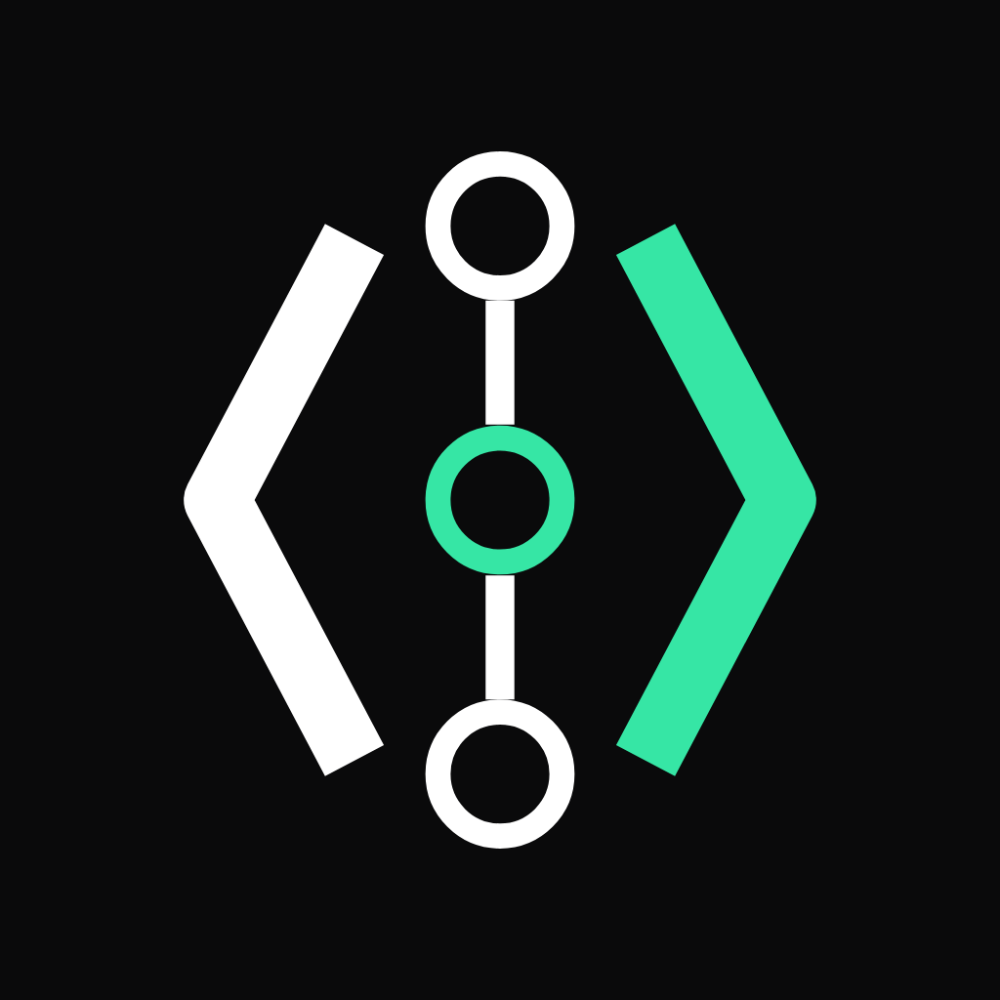

Ryker
The teammate in your chat.
Investigates problems, writes and tests code, opens pull requests, and makes approved changes to your systems.
How Ryker worksRyker is a self-hosted AI teammate in Slack and GitHub. It investigates alerts, works on code, and follows through.
 engineering
engineering your-team / deploy-tools
your-team / deploy-toolsmain from ryker/registry-authReload changed credentials. Alert if signing in fails again.
deploy/registry.nomad.hcl+1 −1template { source = "local/auth.ctmpl" destination = "secrets/auth.json" change_mode = "noop" change_mode = "restart"}alerts/registry.yml+2alert: RegistryAuthenticationFailedexpr: registry_auth_errors_total > 0expr: rate(registry_auth_errors_total[5m]) > 0All checks passed3 / 3
alerts/registry.test.yml+4alert_rule_test: - eval_time: 10m alertname: RegistryAuthenticationFailed exp_alerts: [] Ryker added commit 7bd42ea · Fix alert recovery
The updated commit passes all three checks. The alert now clears once authentication recovers.
Looks good. Marked ready and approved. I’ll merge this now.
You merged this into mainfrom ryker/registry-auth
Ask a question, or let Ryker pick up an alert. It reads the conversation, checks the tools you’ve connected, and brings the evidence back to the thread.
Ask a follow-up. Challenge a finding. Point it in another direction. The work stays in the conversation.
Working together in SlackRyker prepares the change in a separate copy of your project that runs inside a sandbox, runs its checks, and can open a draft pull request when you’ve enabled it.
Failed checks and review feedback go back to the same task. Your team reviews and merges. Matching deployment updates bring Ryker back to check the result.
From conversation to pull requestRyker uses co:op’s sandbox to write and test code, and Emisar’s secure remote access to work on your systems. When an alert arrives, it can investigate, prepare a fix, and ask for approval before applying it.
The teammate in your chat.
Investigates problems, writes and tests code, opens pull requests, and makes approved changes to your systems.
How Ryker worksA sandbox for the work.
Runs the model in a container with a separate working copy of your project. A place to read code, prepare a fix, and run its tests.
Explore co:op
EmisarSecure access to your systems.
Connects the work to your infrastructure and tools. You choose what it can reach, which actions need approval, and see a record of what ran.
Explore EmisarA change to make. A problem to solve. A conversation worth joining.
Ask for a feature or a fix. Ryker makes a plan, writes the code in its own working copy, runs the tests, and opens a draft pull request.
It fixes failing checks and works through review feedback in the same PR. The task card keeps you up to date, and Ryker asks when it needs a decision.
From request to pull requestengineeringAsk Ryker to look at a pull request. It reads the change and discussion, then leaves its findings where you’re already reviewing.
Reply, ask a follow-up, or push an update. The conversation stays with the pull request. Your team decides what to merge.
Working together on GitHubyour-team / payments-apimainYour monitoring, CI, and deployment tools already post to Slack. Ryker can pick up those notifications, investigate the problem, and prepare a fix without waiting for a mention.
You review and approve the change. Ryker applies it through Emisar and checks that the issue is resolved. The conversation and progress stay in Slack.
Set up alerts in Slackon-callinc-checkout-timeoutsSet a channel to Be proactive. Ryker can spot a missed detail, connect it to earlier work, or ask a useful question without waiting for a mention.
Keep talking as you normally would. You don’t need another mention for every follow-up.
Choose when it joins inengineeringContext that carries over. Feedback that sticks. Work you don’t have to keep asking for.
Choose the repos it can read. Ryker uses them together to understand how a change affects the rest of your system.
Through Emisar, it checks logs, deployments, and running systems alongside the code. It can trace a problem across services without you having to piece it all together.
Give it the right contextengineeringRyker carries useful context from one conversation to the next: the decisions you made, the problems you solved, and what’s still waiting.
It can show where that context came from. Ask it to remember a decision or save guidance for the team. You can see what’s saved, who it applies to, and when it expires.
What it remembersengineeringTell Ryker what you want it to do differently. It can save your correction and use it in later work in that conversation.
You can see the saved guidance and remove it whenever you like.
How feedback becomes guidanceinfrastructure“Check this tomorrow.” “Look at production every weekday.” Give Ryker a time and a place to bring the answer.
You confirm the schedule and timezone. It does the check when it’s due and returns to the conversation with what it found.
Set up a schedulereleasesSome work comes up again and again. Ask Ryker to review new plans, look into alerts, or follow deployment updates.
You confirm what it should watch and what it should do. When a matching event arrives, Ryker starts the work.
Give it a standing requestinfrastructureAccess to running systems goes through Emisar. Its policy decides what can run and when a person must approve.
When approval is needed, Ryker shows the exact request. You decide in Emisar. After it runs, Ryker checks the intended effect with the tools available.
How approvals workinfrastructureOpen App Home in Slack or Ryker in your browser. See what it’s doing, what it’s waiting for, and which requests need your attention.
Each request keeps its conversation, checks, and results together for as long as you choose to retain them.
See the record of its workVoice notes, screenshots, logs, and files can be part of the conversation. Recordings are transcribed into words.
What you can sendWith a suitable tool connected, Ryker can return a chart or image in the thread, alongside the sources behind its answer.
Pictures with contextTurn on a weekly update for PRs, work waiting on people, what it learned, and reported or estimated model cost.
Get the weekly updateTalk to the same teammate in your browser. Pick an environment, attach a file, and see the work behind each reply.
Meet it in the browserChoose each channel’s repositories, infrastructure access, and when Ryker joins in. It can also watch quietly.
Choose how it takes partConfigured webhooks bring alerts and deployment events into Ryker’s work, with the environment and destination you choose.
Connect an event sourceIts memory and work history live in a database you run. You decide who has access, when to upgrade, and how long records are kept.
Connect Slack, GitHub, and your model account, then start with one channel.
git clone https://github.com/AndrewDryga/ryker ryker
cd ryker && ./install.shThe installer starts Ryker and prints a sign-in link for setup.
Ryker bot
The alert test failed because the counter stays above zero after errors stop. I’m switching to a five-minute rate and adding a check that the alert clears after recovery.